| # | picture | task and instruction | trials | status of each trial | best | last played | the one S0 skill, 2026-11-26 / 27 (development runs, not in the success rate) |
|---|---|---|---|---|---|---|---|
| 1 | 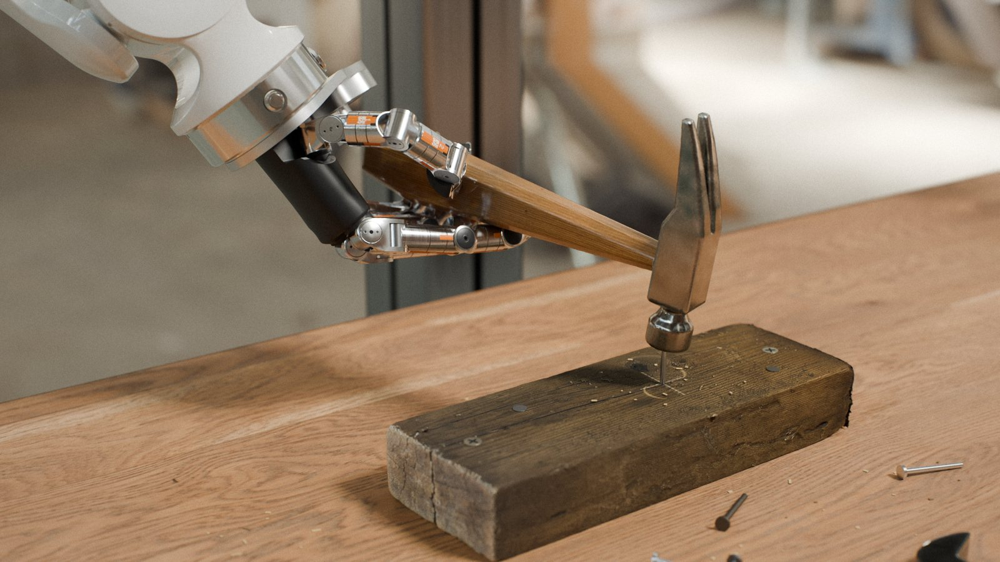 | t01_hammer_nailHammer the nail into the board. | 3 | 40 (attempt 1): FAIL 111 (attempt 2): FAIL 124 (attempt 3): FAIL | FAIL | 2026-11-26 09:15 | not tried running log |
| 2 | 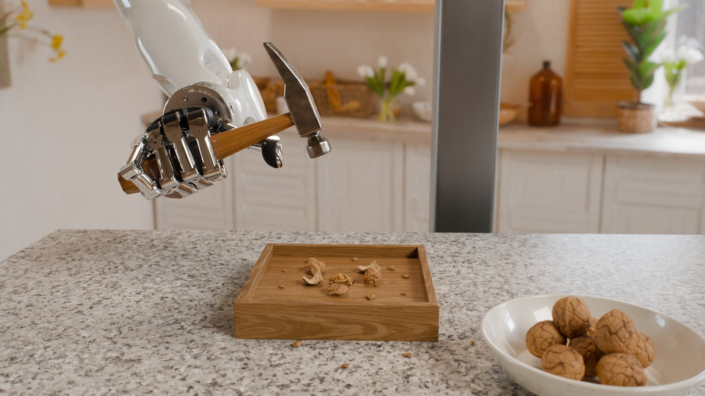 | t02_crack_walnutCrack the walnut with the hammer. | 4 | 40 (attempt 1): FAIL 111 (attempt 2): FAIL 124 (attempt 3): FAIL 130 (attempt 4): FAIL | FAIL | 2026-11-26 11:12 | not tried running log |
| 3 |  | t03_paint_lid_shutTap the lid of the paint tin shut. | 4 | 40 (attempt 1): FAIL 111 (attempt 2): FAIL 117 (attempt 3): FAIL 123 (attempt 4): FAIL | FAIL | 2026-11-26 09:03 | new environment: FAIL 1 run(s), 0 judged PASS, 1 FAIL running log |
| 4 |  | t04_pull_nailPull the nail out of the board with the claw of the hammer. | 2 | 113 (attempt 1): FAIL 125 (attempt 2): FAIL | FAIL | 2026-11-26 09:58 | not tried running log |
| 5 | 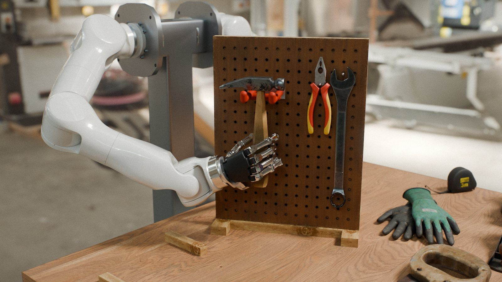 | t05_hang_hammerHang the hammer back on the pegboard. | 4 | 40 (attempt 1): FAIL 111 (attempt 2): FAIL 124 (attempt 3): FAIL 130 (attempt 4): FAIL | FAIL | 2026-11-26 11:12 | not tried running log |
| 6 |  | t06_hinge_screw held-out | 0 | not played yet | — | — | not tried running log |
| 7 |  | t07_battery_coverUnscrew the toy's battery cover and open it. | 3 | 40 (attempt 1): FAIL 111 (attempt 2): FAIL 124 (attempt 3): FAIL | FAIL | 2026-11-26 09:21 | not tried running log |
| 8 |  | t08_pry_paint_lidPry open the lid of the paint tin with the screwdriver. | 2 | 113 (attempt 1): FAIL 125 (attempt 2): FAIL | FAIL | 2026-11-26 09:41 | not tried running log |
| 9 | 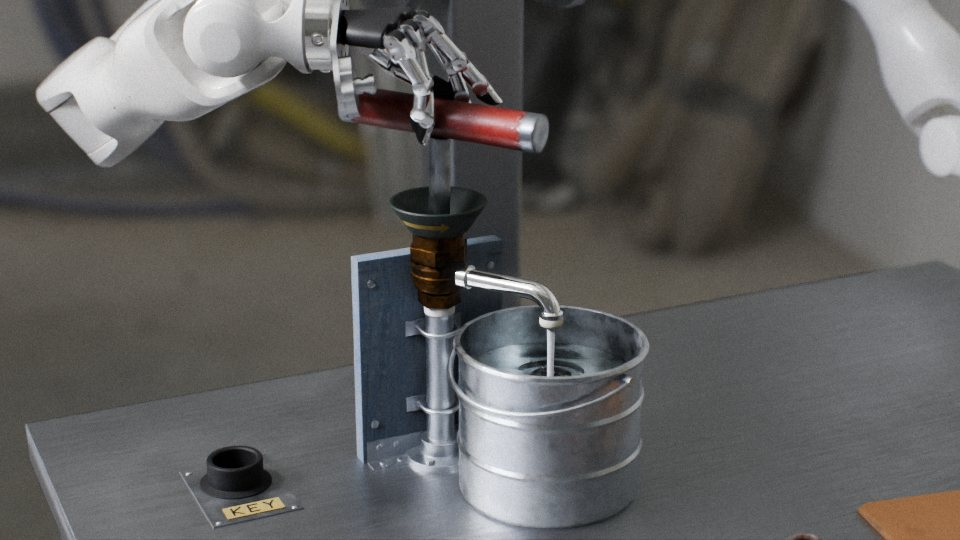 | t09_valve_key held-out | 0 | not played yet | — | — | not tried running log |
| 10 |  | t10_mist_plantMist the leaves of the houseplant. | 1 | 120 (attempt 1): FAIL | FAIL | 2026-11-26 08:09 | not tried running log |
| 11 |  | t11_spray_mirrorSpray glass cleaner on the mirror. | 1 | 120 (attempt 1): FAIL | FAIL | 2026-11-26 08:11 | not tried running log |
| 12 |  | t12_bulb_table_lamp held-out | 0 | not played yet | — | — | not tried running log |
| 13 | 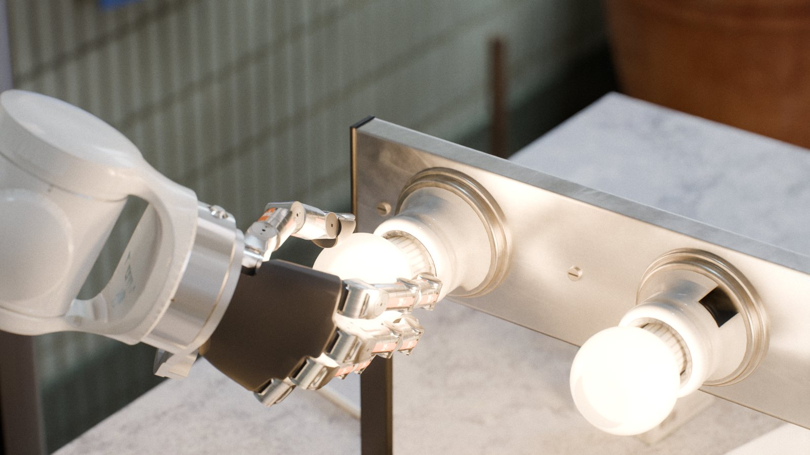 | t13_bulb_vanityScrew the missing bulb into the mirror light. | 2 | 113 (attempt 1): FAIL 122 (attempt 2): FAIL | FAIL | 2026-11-26 08:54 | not tried running log |
| 14 | 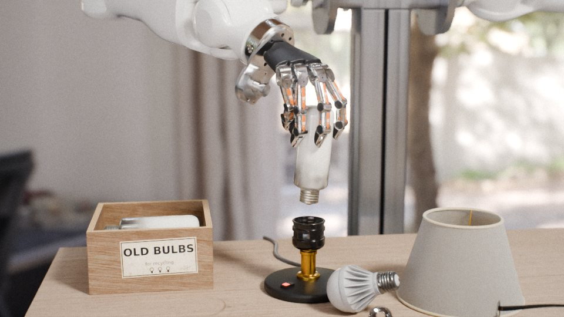 | t14_bulb_removeTake the burnt-out bulb out of the desk lamp and put it in the box. | 3 | 113 (attempt 1): FAIL 114 (attempt 2): FAIL 125 (attempt 3): FAIL | FAIL | 2026-11-26 09:40 | not tried running log |
| 15 |  | t15_bulb_pendantScrew the bulb into the pendant lamp. | 2 | 113 (attempt 1): FAIL 124 (attempt 2): FAIL | FAIL | 2026-11-26 09:25 | not tried running log |
| 16 |  | t16_block_towerPut the block on top of the tower. | 3 | 116 (attempt 1): FAIL 123 (attempt 2): FAIL 127 (attempt 3): FLAGGED | FLAGGED | 2026-11-26 10:29 | new environment: PASS solid table: verified pass, clean 22 run(s), 13 judged PASS, 5 FAIL running log |
| 17 |  | t17_shape_sorterPost the triangle block through the matching hole. | 3 | 116 (attempt 1): FAIL 122 (attempt 2): FAIL 127 (attempt 3): FAIL | FAIL | 2026-11-26 10:18 | new environment: PASS solid table: verified pass, not clean 49 run(s), 8 judged PASS, 6 FAIL running log |
| 18 |  | t18_hob_knobPut the knob back on the hob and turn the burner on. | 4 | 40 (attempt 1): FLAGGED 111 (attempt 2): FAIL 119 (attempt 3): FAIL 126 (attempt 4): FAIL | FLAGGED | 2026-11-26 10:12 | not tried running log |
| 19 | 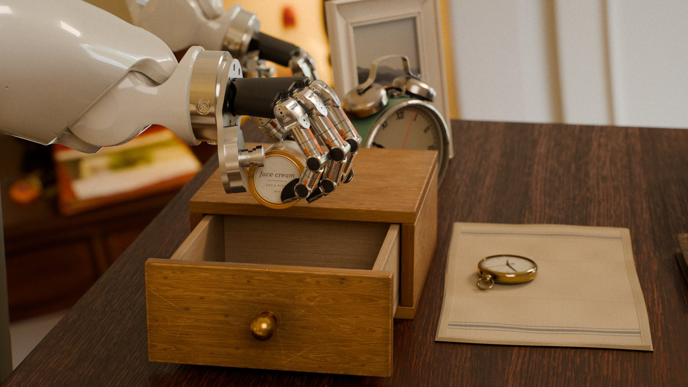 | t19_jar_drawerPut the cream jar in the drawer and close it. | 3 | 0 (attempt 1): FAIL 40 (attempt 2): PASS 110 (attempt 3): PASS | PASS | 2026-11-26 01:39 | new environment: PASS 15 run(s), 9 judged PASS, 6 FAIL running log |
| 20 |  | t20_sink_plugPut the plug in the sink so the water stops running away. | 3 | 116 (attempt 1): FAIL 123 (attempt 2): FAIL 129 (attempt 3): PASS | PASS | 2026-11-26 10:42 | new environment: FAIL solid table: verified pass, not clean 8 run(s), 1 judged PASS, 0 FAIL running log |
| 21 | 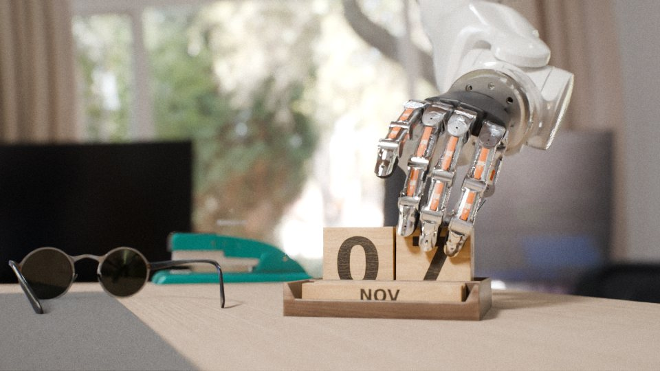 | t21_calendar_cubeSet the calendar to the 7th: turn the day cube so that 7 faces the front and put it back in the tray. | 5 | 0 (attempt 1): FAIL 111 (attempt 2): FAIL 113 (attempt 3): FAIL 114 (attempt 4): FAIL 126 (attempt 5): FAIL | FAIL | 2026-11-26 10:44 | new environment: FAIL 2 run(s), 0 judged PASS, 0 FAIL running log |
| 22 | 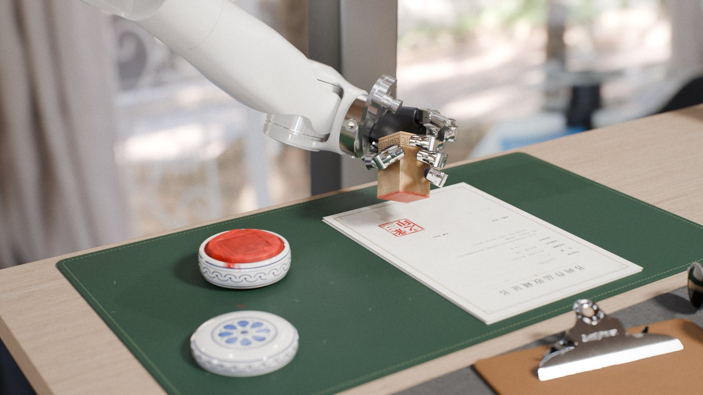 | t22_seal_stampStamp the seal on the document. | 2 | 116 (attempt 1): FAIL 121 (attempt 2): FAIL | FAIL | 2026-11-26 08:21 | not tried running log |
| 23 | 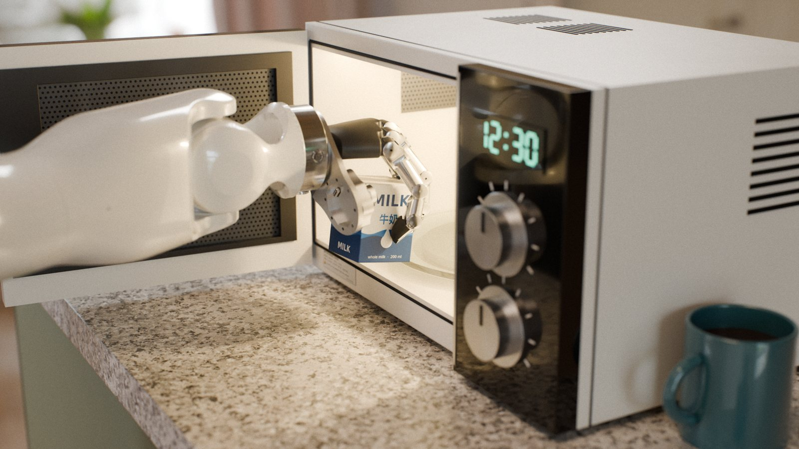 | t23_milk_microwavePut the milk carton in the microwave and close the door. | 2 | 113 (attempt 1): FAIL 125 (attempt 2): FAIL | FAIL | 2026-11-26 09:35 | new environment: FAIL 5 run(s), 0 judged PASS, 0 FAIL running log |
| 24 |  | t24_salt_shakerShake salt over the steak. | 2 | 116 (attempt 1): FAIL 123 (attempt 2): PASS | PASS | 2026-11-26 08:51 | not tried running log |
| 25 |  | t25_fish_foodShake some fish food into the fish bowl. | 3 | 116 (attempt 1): FAIL 123 (attempt 2): FAIL 128 (attempt 3): FAIL | FAIL | 2026-11-26 10:36 | not tried running log |
| 26 |  | t26_can_rack held-out | 0 | not played yet | — | — | not tried running log |
| 27 |  | t27_paperweightPut the paperweight on the poster so it stops rolling back up. | 6 | 0: FAIL 3 (attempt 3): FAIL 20: FAIL 40 (attempt 4): FAIL 110 (attempt 5): FAIL 111 (attempt 6): PASS | PASS | 2026-11-26 01:54 | new environment: FAIL 12 run(s), 0 judged PASS, 1 FAIL running log |
| 28 |  | t28_can_binThrow the empty can into the swing-lid bin. | 6 | 0 (attempt 1): FAIL 110 (attempt 2): FAIL 111 (attempt 3): FAIL 112 (attempt 4): FAIL 116 (attempt 5): FAIL 122 (attempt 6): PASS | PASS | 2026-11-26 08:27 | new environment: blocked 6 run(s), 0 judged PASS, 0 FAIL running log |
| 29 |  | t29_lighter_candleLight the candle with the lighter, then put the lighter back down on the table. | 1 | 120 (attempt 1): FAIL | FAIL | 2026-11-26 08:12 | not tried running log |
| 30 |  | t30_toggle_clamp held-out | 0 | not played yet | — | — | not tried running log |
| 31 | 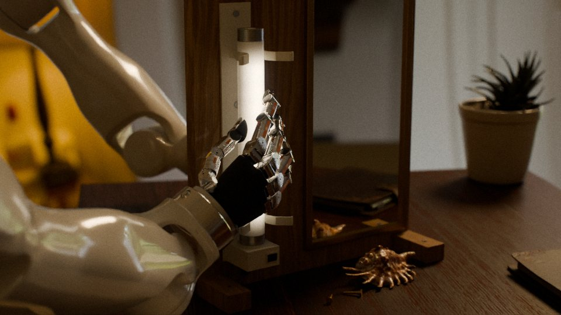 | t31_tube_lamp held-out | 0 | not played yet | — | — | not tried running log |
| 32 |  | t32_umbrella_standPut the umbrella in the stand by the door. | 2 | 0 (attempt 1): FAIL 111 (attempt 2): FAIL | FAIL | 2026-11-26 03:42 | not tried running log |
| 33 | 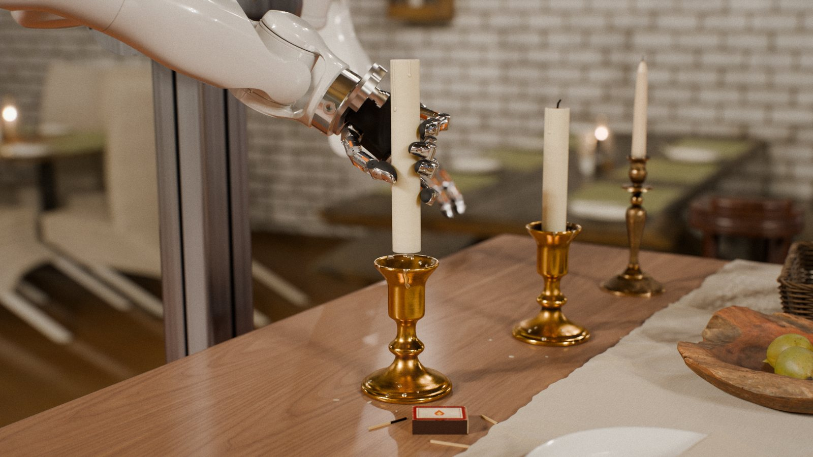 | t33_candle_holderStand the candle in the candlestick. | 4 | 0 (attempt 1): FAIL 111 (attempt 2): FAIL 119 (attempt 3): FAIL 126 (attempt 4): FAIL | FAIL | 2026-11-26 09:52 | new environment: PASS solid table: verified pass, not clean 29 run(s), 15 judged PASS, 6 FAIL running log |
| 34 |  | t34_crush_crackersCrush the crackers in the bag with the rolling pin. | 4 | 40 (attempt 1): FAIL 111 (attempt 2): FAIL 119 (attempt 3): FAIL 126 (attempt 4): FAIL | FAIL | 2026-11-26 09:59 | not tried running log |
| 35 |  | t35_flashlightSwitch on the flashlight and shine it on the label. | 3 | 0 (attempt 1): FAIL 111 (attempt 2): FAIL 120 (attempt 3): FAIL | FAIL | 2026-11-26 08:16 | not tried running log |
| 36 |  | t36_thermos_pour held-out | 0 | not played yet | — | — | not tried running log |
| 37 | 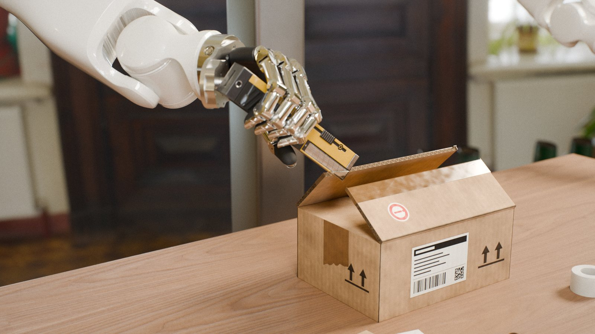 | t37_box_cutter held-out | 0 | not played yet | — | — | not tried running log |
| 38 | t38_tv_remoteTurn on the TV with the remote. | 4 | 0: FAIL 111 (attempt 2): FAIL 113 (attempt 3): FAIL 121 (attempt 4): PASS | PASS | 2026-11-26 08:21 | new environment: FAIL 3 run(s), 0 judged PASS, 1 FAIL running log | |
| 39 | 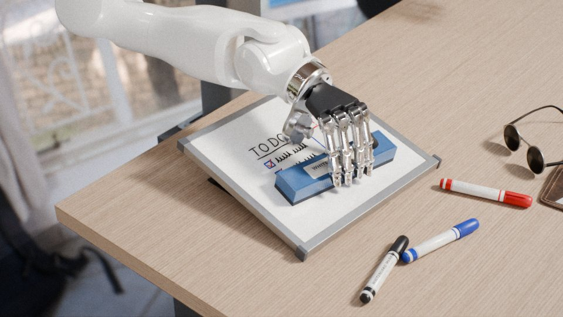 | t39_whiteboard_eraseWipe the writing off the whiteboard. | 2 | 113 (attempt 1): FAIL 117 (attempt 2): PASS | PASS | 2026-11-26 07:28 | new environment: FAIL 1 run(s), 0 judged PASS, 0 FAIL running log |
| 40 |  | t40_scrape_crumbsScrape the crumbs off the board into the tray. | 5 | 40 (attempt 1): FAIL 41 (attempt 2): FAIL 111 (attempt 3): FAIL 122 (attempt 4): FAIL 127 (attempt 5): FLAGGED | FLAGGED | 2026-11-26 10:48 | not tried running log |
| 41 | 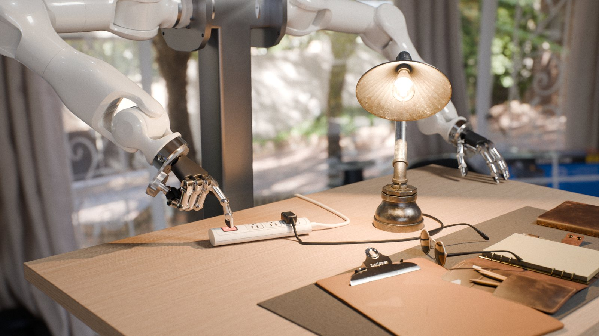 | t41_power_stripSwitch on the power strip; the desk lamp should light. | 3 | 0: FAIL 40 (attempt 2): PASS 110 (attempt 3): PASS | PASS | 2026-11-26 01:33 | new environment: PASS 2 run(s), 1 judged PASS, 1 FAIL running log |
| 42 |  | t42_dish_soapSqueeze some dish soap onto the sponge. | 8 | 40 (attempt 1): FAIL 41 (attempt 2): FAIL 111 (attempt 3): FAIL 112 (attempt 4): PASS 114 (attempt 5): FAIL 115 (attempt 6): FAIL 118 (attempt 7): FAIL 126 (attempt 8): PASS | PASS | 2026-11-26 09:45 | not tried running log |
| 43 |  | t43_chalk_line held-out | 0 | not played yet | — | — | not tried running log |
| 44 |  | t44_crush_garlicCrush the garlic in the mortar with the pestle. | 2 | 113 (attempt 1): FAIL 119 (attempt 2): FAIL | FAIL | 2026-11-26 08:01 | not tried running log |
| 45 |  | t45_pepper_mill held-out | 0 | not played yet | — | — | not tried running log |
| 46 |  | t46_table_legScrew the last leg onto the stool. | 3 | 113 (attempt 1): FAIL 119 (attempt 2): FAIL 126 (attempt 3): FAIL | FAIL | 2026-11-26 09:52 | not tried running log |
| 47 |  | t47_level_shelfLevel the shelf: lay the level on it and turn the adjusting wheel until the bubble is centred. | 4 | 113 (attempt 1): FAIL 115 (attempt 2): FAIL 118 (attempt 3): FAIL 126 (attempt 4): FAIL | FAIL | 2026-11-26 10:33 | not tried running log |
| 48 | 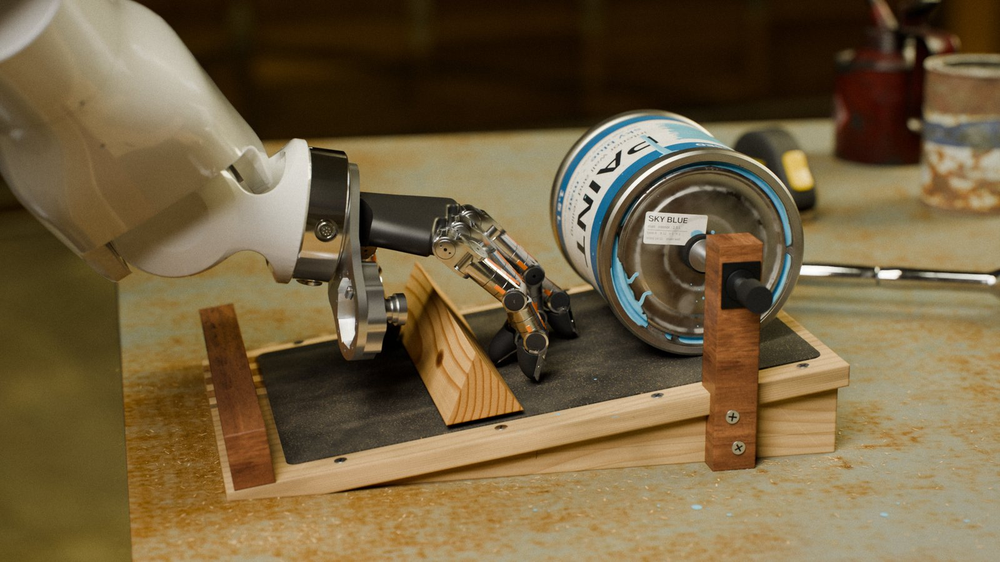 | t48_wheel_chockChock the paint drum so it does not roll down the ramp. | 5 | 40 (attempt 1): FAIL 111 (attempt 2): FAIL 112 (attempt 3): FAIL 124 (attempt 4): FAIL 130 (attempt 5): FAIL | FAIL | 2026-11-26 11:02 | new environment: FAIL 42 run(s), 0 judged PASS, 18 FAIL running log |
| 49 |  | t49_weigh_orangeWeigh the orange on the kitchen scale. | 5 | 40 (attempt 1): FLAGGED 111 (attempt 2): FAIL 116 (attempt 3): FAIL 122 (attempt 4): FAIL 127 (attempt 5): FAIL | FLAGGED | 2026-11-26 10:09 | new environment: PASS solid table: verified pass, not clean 37 run(s), 13 judged PASS, 3 FAIL running log |
| 50 |  | t50_toy_bowlingRoll the ball and knock down the pins. | 3 | 40 (attempt 1): FLAGGED 111 (attempt 2): FAIL 117 (attempt 3): PASS | PASS | 2026-11-26 07:09 | new environment: FAIL 5 run(s), 0 judged PASS, 0 FAIL running log |